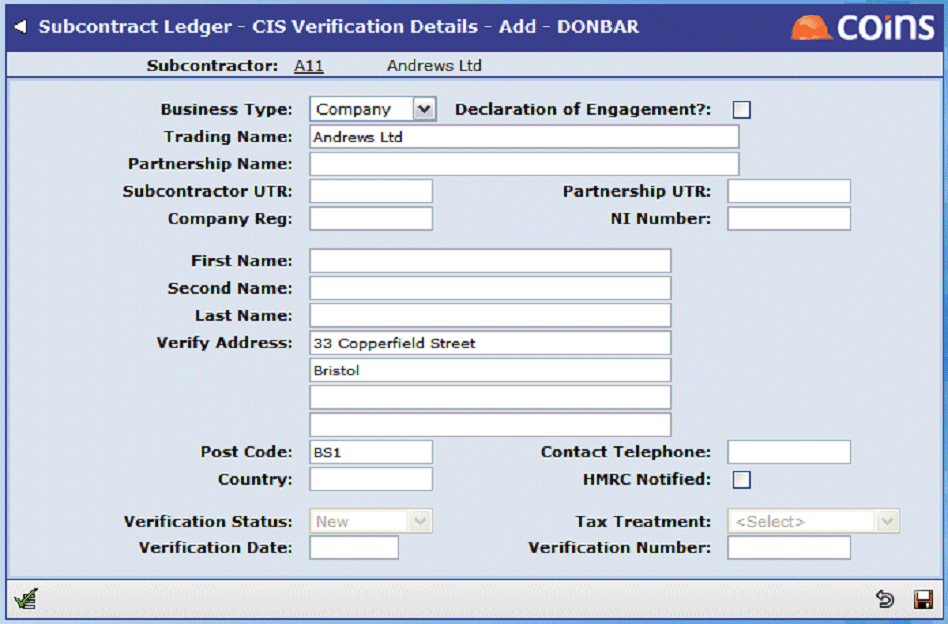

Maintaining Subcontractor CIS Data
For existing subcontractors covered by the transitional arrangements, you do not need to enter CIS details if you have created transitional records at the start of the CIS 2007 scheme. See the separate document How To Manage the Transition to CIS 2007.
For new subcontractors, you need to enter the CIS verification details. If you are verifying subcontractors offline (see Offline Verification) you can enter the verification status details as supplied by HMRC; if you are verifying subcontractors electronically ( OA only, see Electronic Verification), you need to enter the basic details, then submit the subcontractor record for verification. updates the verification details automatically.
To enter CIS data for a new subcontractor
- Go to Subcontractor Maintenance.
- Click the link in the Subcontractor Account column.
- Click the Verification tab.
- Click
 to create a new verification record.
to create a new verification record.

- Fill in the fields (refer to the side-frame help for details).
When adding CIS details for a subcontractor to be verified electronically, enter a status of New.
- Click
 to save the record.
to save the record.
Character sets
The following characters are valid in text fields:
|
|
| Letters, uppercase |
A to Z |
| Letters, lower case |
a to z |
| Numerals |
0 to 9 |
| Space character |
|
|
|
. |
| Comma |
, |
| Hyphen/minus sign |
- |
| Opening parenthesis |
( |
| Closing parenthesis |
) |
| Oblique stroke/slash |
/ |
| Equals sign |
= |
| Exclamation mark |
! |
| Quotation mark |
" |
| Percentage sign |
% |
| Ampersand |
& |
| Asterisk |
* |
| Semi-colon |
; |
| Less-than sign |
< |
| Greater-than sign |
> |
| Apostrophe |
' |
| Plus sign |
+ |
| Colon |
: |
| Question mark |
? |
Note that Forename and
fields allow a more restricted set of valid characters; refer to the side-frame help.